[1] "hello world"tidyverse for data analysis
remixed from Claus O. Wilke’s SDS375 course and Andrew P. Bray’s quarto workshop
Workshop materials are here:
Goals for this session
RStudio and the Quarto notebook
Loading and writing tabular data
Data wrangling and make plots with the
tidyverseTables and statistics
Let’s take a poll
Go to the event on wooclap
Create a project
Positron
Let’s take a poll
Go to the event on wooclap
Installing and loading packages
Packages are a collection of functions and objects that are shared for free to use.
In the console, you can type e.g. install.packages("tidyverse") to install most R packages.
Sometimes R packages need to be installed a different way, and the documentation of the package will tell you how.
Then, to load a package, add library("tidyverse") in a code chunk (usually in the first code cell of your document)
Quarto’s Code Chunk
You can quickly insert chunks like these into your file with
- the keyboard shortcut Ctrl + Alt + I (OS X: Shift + Command + I)
- the Add Chunk
 command in the editor toolbar
command in the editor toolbar
- or by typing the chunk delimiters
```{r}```
Example chunk:
Writing code: assigning variables
You can use <- or = to assign values to variables
We will use <- for all examples going forward.
Naming variables
A lot of R people use . inside variable names, but in most languages besides R this would be an error. It’s good practice these days to use the _ underscore if you want separation in your variable names.
Functions
Functions are named bits of code that take parameters as input and return some output
str_c is a function that puts concatenates strings.
functions can have named parameters as well as positional parameters.
named parameters always take an = sign for assignment.
Getting help with functions
Type ?str_c in the console to get a help page. check out this guide on how to read the R help pages.
Google! Add “tidyverse” to search queries to get more relevant results.
phind.com and chat.deepseek.com are good free AI services for getting help with code.
Value types in R
The type of the value can be
# numeric
c(1,2,3,4)
# character
c("a","b","c","d")
# boolean
c(TRUE, FALSE)
# factor
c("Mon", "Tue", "Wed", "Thu", "Fri", "Sat", "Sun") %>% as_factor()05:00
tibbles (aka data frames)
tibbles are the big reason R is great for working with tabular data.
A data frame is a rectangular collection of variables (in the columns) and observations (in the rows).
# A tibble: 132 × 6
pid time_point arm nugent_score crp_blood ph
<chr> <chr> <chr> <dbl> <dbl> <dbl>
1 pid_01 baseline placebo 8 0.44 5.7
2 pid_01 week_1 placebo 7 1.66 5.2
3 pid_01 week_7 placebo 7 1.44 5.4
4 pid_02 baseline placebo 7 1.55 5.2
5 pid_02 week_1 placebo 7 0.75 4.8
6 pid_02 week_7 placebo 4 1.17 4.2
7 pid_03 baseline placebo 6 1.78 4.8
8 pid_03 week_1 placebo 10 0.57 5.3
9 pid_03 week_7 placebo 7 1.79 5.2
10 pid_04 baseline placebo 5 1.76 4.8
# ℹ 122 more rowsExamples of coding
Quick live demo of doing some work in R
- Assigning variables
- Vectors are magic
- Functions and getting help
Elementary data manipulations
Pick rows:
filter()Pick columns:
select()Sort rows:
arrange()Count things:
count()Make new columns:
mutate()
How to read in data?
Data is often in tables, and the easiest way to store tabular data is in csv or tsv format.
csv - comma separated values
tsv - tab separated values
to read in data stored this way use read_csv(filename) or read_tsv(filename)
But first: the pipe operator %>%
But first: the pipe operator %>%
%>% is pronounced “and then”
The pipe %>% feeds data into functions
# A tibble: 6 × 6
pid time_point arm nugent_score crp_blood ph
<chr> <chr> <chr> <dbl> <dbl> <dbl>
1 pid_01 baseline placebo 8 0.44 5.7
2 pid_01 week_1 placebo 7 1.66 5.2
3 pid_01 week_7 placebo 7 1.44 5.4
4 pid_02 baseline placebo 7 1.55 5.2
5 pid_02 week_1 placebo 7 0.75 4.8
6 pid_02 week_7 placebo 4 1.17 4.2The pipe %>% feeds data into functions
# A tibble: 6 × 6
pid time_point arm nugent_score crp_blood ph
<chr> <chr> <chr> <dbl> <dbl> <dbl>
1 pid_01 baseline placebo 8 0.44 5.7
2 pid_01 week_1 placebo 7 1.66 5.2
3 pid_01 week_7 placebo 7 1.44 5.4
4 pid_02 baseline placebo 7 1.55 5.2
5 pid_02 week_1 placebo 7 0.75 4.8
6 pid_02 week_7 placebo 4 1.17 4.2The pipe %>% feeds data into functions
The pipe %>% feeds data into functions

Since R 4.1: Native pipe |>

Which to use? Native pipe or old-school pipe?
|>is the future. If you can, use it.%>%works on older installations. It’s the safe choice for now.
We use %>% here because many people still run older R versions. Also, we’re old school.
Picking rows or columns, and sorting
Pick rows from a table: filter()
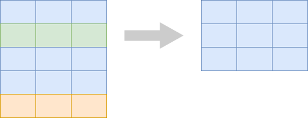Filter only placebo
# A tibble: 69 × 6
pid time_point arm nugent_score crp_blood ph
<chr> <chr> <chr> <dbl> <dbl> <dbl>
1 pid_01 baseline placebo 8 0.44 5.7
2 pid_01 week_1 placebo 7 1.66 5.2
3 pid_01 week_7 placebo 7 1.44 5.4
4 pid_02 baseline placebo 7 1.55 5.2
5 pid_02 week_1 placebo 7 0.75 4.8
6 pid_02 week_7 placebo 4 1.17 4.2
7 pid_03 baseline placebo 6 1.78 4.8
8 pid_03 week_1 placebo 10 0.57 5.3
9 pid_03 week_7 placebo 7 1.79 5.2
10 pid_04 baseline placebo 5 1.76 4.8
# ℹ 59 more rowsFilter out samples with ph < 4
# A tibble: 39 × 6
pid time_point arm nugent_score crp_blood ph
<chr> <chr> <chr> <dbl> <dbl> <dbl>
1 pid_05 week_1 treatment 3 0.19 3.2
2 pid_05 week_7 treatment 2 0.45 3.5
3 pid_09 week_1 treatment 3 0.27 3.6
4 pid_10 week_1 treatment 0 0.01 3.5
5 pid_10 week_7 treatment 1 2.87 2.9
6 pid_11 week_1 treatment 1 0.1 3.3
7 pid_15 week_1 treatment 3 0.84 3.4
8 pid_15 week_7 treatment 3 0.68 3.5
9 pid_16 week_1 treatment 0 0.03 3.7
10 pid_16 week_7 treatment 2 0.5 3.2
# ℹ 29 more rowsPick columns from a table: select()

Pick columns pid, ph, and nugent
Rename columns and subset with select
# A tibble: 132 × 3
participant_id ph nugent_score
<chr> <dbl> <dbl>
1 pid_01 5.7 8
2 pid_01 5.2 7
3 pid_01 5.4 7
4 pid_02 5.2 7
5 pid_02 4.8 7
6 pid_02 4.2 4
7 pid_03 4.8 6
8 pid_03 5.3 10
9 pid_03 5.2 7
10 pid_04 4.8 5
# ℹ 122 more rowsSort the rows in a table: arrange()
Sort samples by ph ascending
# A tibble: 132 × 6
pid time_point arm nugent_score crp_blood ph
<chr> <chr> <chr> <dbl> <dbl> <dbl>
1 pid_31 week_7 treatment 2 1.36 2.8
2 pid_10 week_7 treatment 1 2.87 2.9
3 pid_28 baseline treatment 3 0.67 2.9
4 pid_26 week_1 treatment 0 0.11 3
5 pid_23 week_7 placebo 3 3.67 3.1
6 pid_40 baseline treatment 3 1.48 3.1
7 pid_40 week_1 treatment 2 0.17 3.1
8 pid_05 week_1 treatment 3 0.19 3.2
9 pid_16 week_7 treatment 2 0.5 3.2
10 pid_37 week_7 treatment 2 0.7 3.2
# ℹ 122 more rowsSort samples by ph, descending
# A tibble: 132 × 6
pid time_point arm nugent_score crp_blood ph
<chr> <chr> <chr> <dbl> <dbl> <dbl>
1 pid_29 baseline placebo 7 2.39 5.8
2 pid_01 baseline placebo 8 0.44 5.7
3 pid_16 baseline treatment 6 1.91 5.7
4 pid_06 week_1 placebo 8 1.72 5.6
5 pid_26 baseline treatment 7 0.94 5.6
6 pid_13 week_1 placebo 7 2.57 5.5
7 pid_23 week_1 placebo 8 0.8 5.5
8 pid_27 baseline placebo 7 1.17 5.5
9 pid_01 week_7 placebo 7 1.44 5.4
10 pid_04 week_7 placebo 7 5.68 5.4
# ℹ 122 more rowsCounting things
To demonstrate counting, let’s switch to table_01
# A tibble: 44 × 6
pid arm smoker age education sex
<chr> <chr> <chr> <dbl> <chr> <chr>
1 pid_01 placebo non-smoker 26 grade 10-12, matriculated Female
2 pid_02 placebo smoker 33 grade 10-12, matriculated Female
3 pid_03 placebo smoker 30 post-secondary Female
4 pid_04 placebo non-smoker 34 grade 10-12, not matriculated Female
5 pid_05 treatment non-smoker 29 grade 10-12, matriculated Female
6 pid_06 placebo smoker 34 post-secondary Female
7 pid_07 placebo non-smoker 31 grade 10-12, not matriculated Female
8 pid_08 placebo smoker 30 grade 10-12, not matriculated Female
9 pid_09 treatment non-smoker 35 grade 10-12, not matriculated Female
10 pid_10 treatment non-smoker 32 less than grade 9 Female
# ℹ 34 more rowsCounting things
Counting things
Let’s take a poll
Go to the event on wooclap
M2. Does filter get rid of rows that match TRUE, or keep rows that match TRUE?
Use the pipe to build analysis pipelines
# A tibble: 23 × 6
pid arm smoker age education sex
<chr> <chr> <chr> <dbl> <chr> <chr>
1 pid_01 placebo non-smoker 26 grade 10-12, matriculated Female
2 pid_02 placebo smoker 33 grade 10-12, matriculated Female
3 pid_03 placebo smoker 30 post-secondary Female
4 pid_04 placebo non-smoker 34 grade 10-12, not matriculated Female
5 pid_06 placebo smoker 34 post-secondary Female
6 pid_07 placebo non-smoker 31 grade 10-12, not matriculated Female
7 pid_08 placebo smoker 30 grade 10-12, not matriculated Female
8 pid_12 placebo non-smoker 31 grade 10-12, matriculated Female
9 pid_13 placebo non-smoker 32 post-secondary Female
10 pid_14 placebo smoker 32 grade 10-12, matriculated Female
# ℹ 13 more rowsUse the pipe to build analysis pipelines
# A tibble: 12 × 3
pid arm smoker
<chr> <chr> <chr>
1 pid_01 placebo non-smoker
2 pid_05 treatment non-smoker
3 pid_15 treatment non-smoker
4 pid_17 treatment non-smoker
5 pid_21 treatment non-smoker
6 pid_27 placebo smoker
7 pid_30 placebo non-smoker
8 pid_31 treatment non-smoker
9 pid_35 placebo non-smoker
10 pid_36 placebo non-smoker
11 pid_41 treatment smoker
12 pid_44 treatment non-smokerUse the pipe to build analysis pipelines
Adding new columns to a table
Make a new table column: mutate()

Example: C-reactive protein
The crp_blood column is in units of mg/L. What if you needed it in ug/ul? What’s the calculation?
# A tibble: 132 × 3
pid time_point crp_blood
<chr> <chr> <dbl>
1 pid_01 baseline 0.44
2 pid_01 week_1 1.66
3 pid_01 week_7 1.44
4 pid_02 baseline 1.55
5 pid_02 week_1 0.75
6 pid_02 week_7 1.17
7 pid_03 baseline 1.78
8 pid_03 week_1 0.57
9 pid_03 week_7 1.79
10 pid_04 baseline 1.76
# ℹ 122 more rowsExample: C-reactive protein
The crp_blood column is in units of mg/L. What if you needed it in ug/ul? What’s the calculation?
To get ug/L you would multiply by 1000. To get ug/ul you need to then divide by 1000000
# A tibble: 132 × 3
pid time_point crp_blood
<chr> <chr> <dbl>
1 pid_01 baseline 0.44
2 pid_01 week_1 1.66
3 pid_01 week_7 1.44
4 pid_02 baseline 1.55
5 pid_02 week_1 0.75
6 pid_02 week_7 1.17
7 pid_03 baseline 1.78
8 pid_03 week_1 0.57
9 pid_03 week_7 1.79
10 pid_04 baseline 1.76
# ℹ 122 more rowsExample: C-reactive protein
The crp_blood column is in units of mg/L. What if you needed it in ug/ul? What’s the calculation?
To get ug/L you would multiply by 1000. To get ug/ul you need to then divide by 1000000
```{r}
table_02 %>%
select(pid, time_point, crp_blood) %>%
mutate(crp_blood_ugul = crp_blood / 1000)
```# A tibble: 132 × 4
pid time_point crp_blood crp_blood_ugul
<chr> <chr> <dbl> <dbl>
1 pid_01 baseline 0.44 0.00044
2 pid_01 week_1 1.66 0.00166
3 pid_01 week_7 1.44 0.00144
4 pid_02 baseline 1.55 0.00155
5 pid_02 week_1 0.75 0.00075
6 pid_02 week_7 1.17 0.00117
7 pid_03 baseline 1.78 0.00178
8 pid_03 week_1 0.57 0.00057
9 pid_03 week_7 1.79 0.00179
10 pid_04 baseline 1.76 0.00176
# ℹ 122 more rowsMake multiple columns at once
```{r}
table_02 %>%
select(pid, time_point, crp_blood) %>%
mutate(crp_blood_ugul = crp_blood / 1000,
crp_blood_ugl = crp_blood * 1000)
```# A tibble: 132 × 5
pid time_point crp_blood crp_blood_ugul crp_blood_ugl
<chr> <chr> <dbl> <dbl> <dbl>
1 pid_01 baseline 0.44 0.00044 440
2 pid_01 week_1 1.66 0.00166 1660
3 pid_01 week_7 1.44 0.00144 1440
4 pid_02 baseline 1.55 0.00155 1550
5 pid_02 week_1 0.75 0.00075 750
6 pid_02 week_7 1.17 0.00117 1170
7 pid_03 baseline 1.78 0.00178 1780
8 pid_03 week_1 0.57 0.00057 570
9 pid_03 week_7 1.79 0.00179 1790
10 pid_04 baseline 1.76 0.00176 1760
# ℹ 122 more rowsExercise
That’s enough slides for now time to try for yourself! Go to the module and go to Exercise 1.
20:00
Aesthetics - the elements of data visualization
Exercise 2
30:00
Get in groups of three. On excalidraw.com or pen and paper, create a visualization to answer the questions below. Check out the data visualization cheatsheet for inspiration. Think about values you’d have to compute, or if you have everything you need already in our joined_data table.
Plots map data onto graphical elements.
02_visit_clinical_measurements_UKZN_workshop_2023.csv
| pid | time_point | arm | nugent_score | crp_blood | ph |
|---|---|---|---|---|---|
| pid_01 | baseline | placebo | 8 | 0.44 | 5.7 |
| pid_01 | week_1 | placebo | 7 | 1.66 | 5.2 |
| pid_01 | week_7 | placebo | 7 | 1.44 | 5.4 |
| pid_02 | baseline | placebo | 7 | 1.55 | 5.2 |
| pid_02 | week_1 | placebo | 7 | 0.75 | 4.8 |
| pid_02 | week_7 | placebo | 4 | 1.17 | 4.2 |
pH mapped to y position
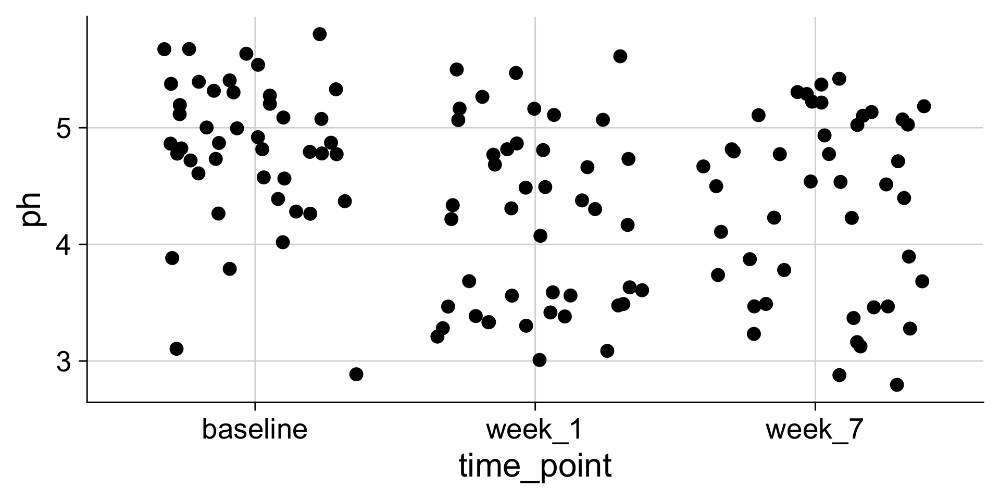pH mapped to color
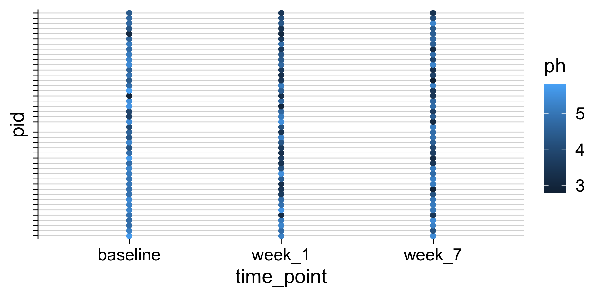Commonly used aesthetics

Figure from Claus O. Wilke. Fundamentals of Data Visualization. O’Reilly, 2019
The same data values can be mapped to different aesthetics

Figure from Claus O. Wilke. Fundamentals of Data Visualization. O’Reilly, 2019
We can use many different aesthetics at once
Creating aesthetic mappings in ggplot
We define the mapping with aes()
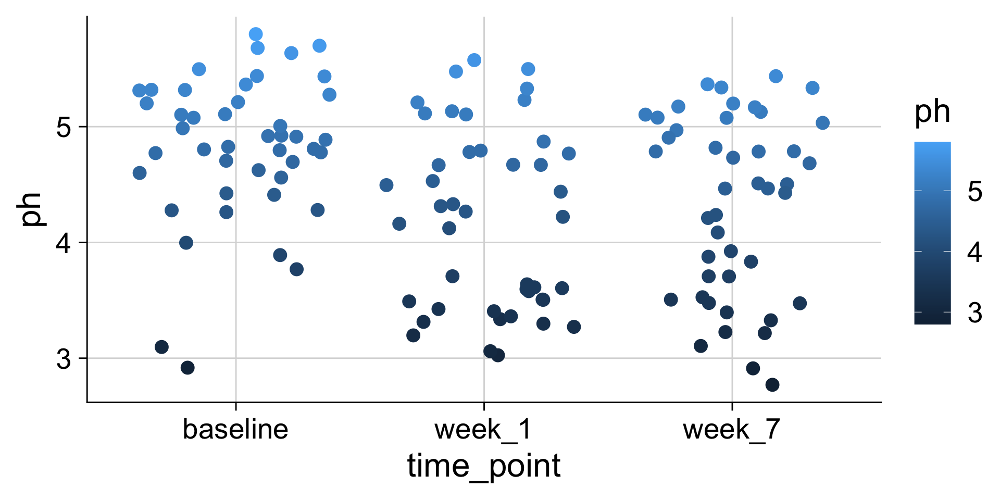We frequently omit argument names
Long form, all arguments are named:
We frequently omit argument names
Abbreviated form, common arguments remain unnamed:
The geom determines how the data is shown
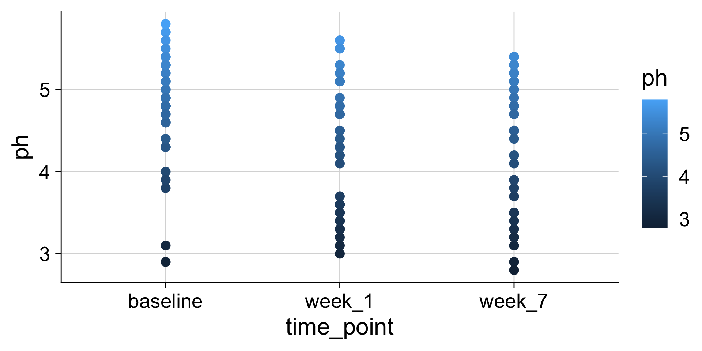The geom determines how the data is shown

The geom determines how the data is shown
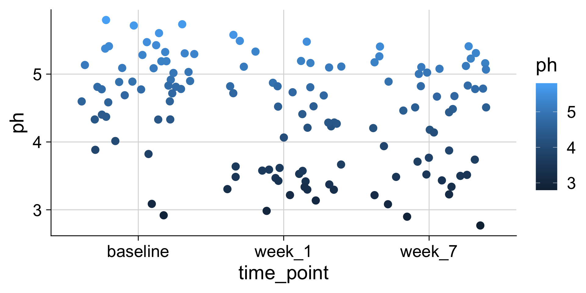Different geoms have parameters for control
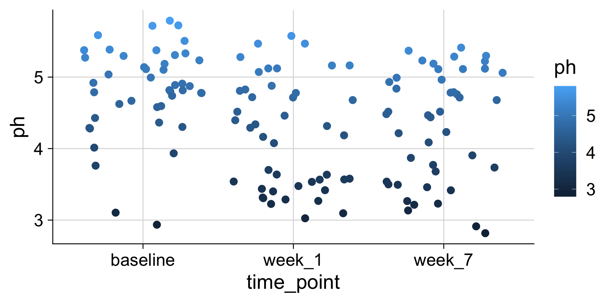Different geoms have parameters for control
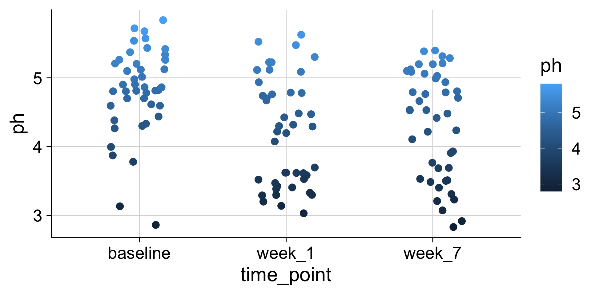Important: color and fill apply to different elements
color
Applies color to points, lines, text, borders
fill
Applies color to any filled areas
Many geoms have both color and fill aesthetics
Many geoms have both color and fill aesthetics
Many geoms have both color and fill aesthetics
Aesthetics can also be used as parameters in geoms
Aesthetics can also be used as parameters in geoms
Exercise
30:00
Time to try it yourself. Go to Exercise 3.
During an activity, place a yellow sticky on your laptop if you’re good to go and a pink sticky if you want help.
Visualizing distributions
Histograms and density plots
| age | sex | class | survived |
|---|---|---|---|
| 0.17 | female | 3rd | survived |
| 0.33 | male | 3rd | died |
| 0.80 | male | 2nd | survived |
| 0.83 | male | 2nd | survived |
| 0.83 | male | 3rd | survived |
| 0.92 | male | 1st | survived |
| 1.00 | female | 2nd | survived |
| 1.00 | female | 3rd | survived |
| 1.00 | male | 2nd | survived |
| 1.00 | male | 2nd | survived |
| 1.00 | male | 3rd | survived |
| 1.50 | female | 3rd | died |
| age | sex | class | survived |
|---|---|---|---|
| 1.5 | female | 3rd | died |
| 2.0 | female | 1st | died |
| 2.0 | female | 2nd | survived |
| 2.0 | female | 3rd | died |
| 2.0 | female | 3rd | died |
| 2.0 | male | 2nd | survived |
| 2.0 | male | 2nd | survived |
| 2.0 | male | 2nd | survived |
| 3.0 | female | 2nd | survived |
| 3.0 | female | 3rd | survived |
| 3.0 | male | 2nd | survived |
| 3.0 | male | 2nd | survived |
| age | sex | class | survived |
|---|---|---|---|
| 3 | male | 3rd | survived |
| 3 | male | 3rd | survived |
| 4 | female | 2nd | survived |
| 4 | female | 2nd | survived |
| 4 | female | 3rd | survived |
| 4 | female | 3rd | survived |
| 4 | male | 1st | survived |
| 4 | male | 3rd | died |
| 4 | male | 3rd | survived |
| 5 | female | 3rd | survived |
| 5 | female | 3rd | survived |
| 5 | male | 3rd | died |
Histograms depend on the chosen bin width
Let’s take a poll
Go to the event on wooclap
Histograms and density plots in ggplot2
Making histograms with ggplot: geom_histogram()
Setting the bin width
Do you like where there bins are? What does the first bin say?
Always set the center as well, to half the bin_width
Setting center 2.5 makes the bars start 0-5, 5-10, etc. instead of 2.5-7.5, etc. You could instead use the argument boundary=5 to accomplish the same behavior.
Making density plots with ggplot: geom_density()
Making density plots with ggplot: geom_density()
without fill
Boxplots: Showing values along y, conditions along x
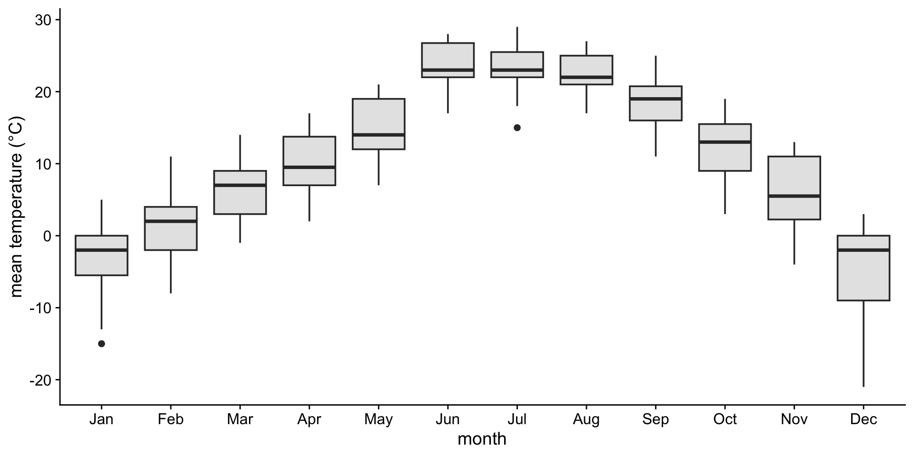A boxplot is a crude way of visualizing a distribution.
How to read a boxplot
If you like density plots, consider violins
A violin plot is a density plot rotated 90 degrees and then mirrored.
How to read a violin plot
Making boxplots, violins, etc. in ggplot2
Making boxplots, violins, etc. in ggplot2
| Plot type | Geom | Notes |
|---|---|---|
| boxplot | geom_boxplot() |
|
| violin plot | geom_violin() |
|
| strip chart | geom_point() |
Jittering requires position_jitter() |
| sina plot | geom_sina() |
From package ggforce |
| scatter-density plot | geom_quasirandom() |
From package ggbeeswarm |
| ridgeline | geom_density_ridges() |
From package ggridges |
Examples: Boxplot
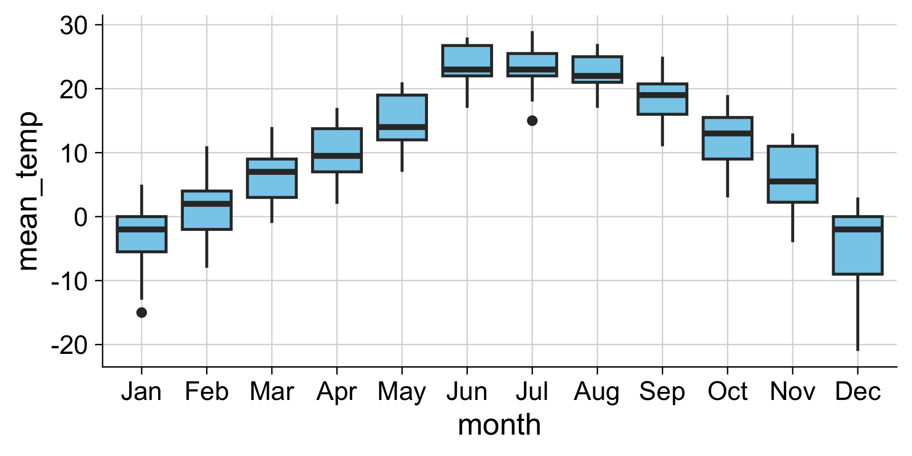Examples: Violins
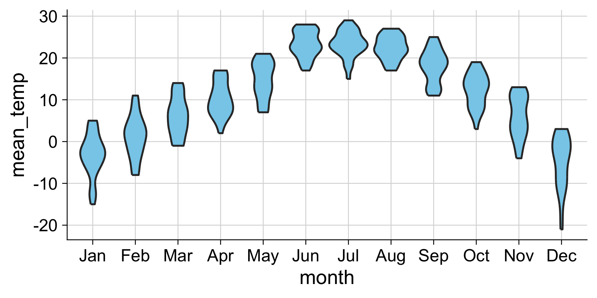Examples: Strip chart (no jitter)
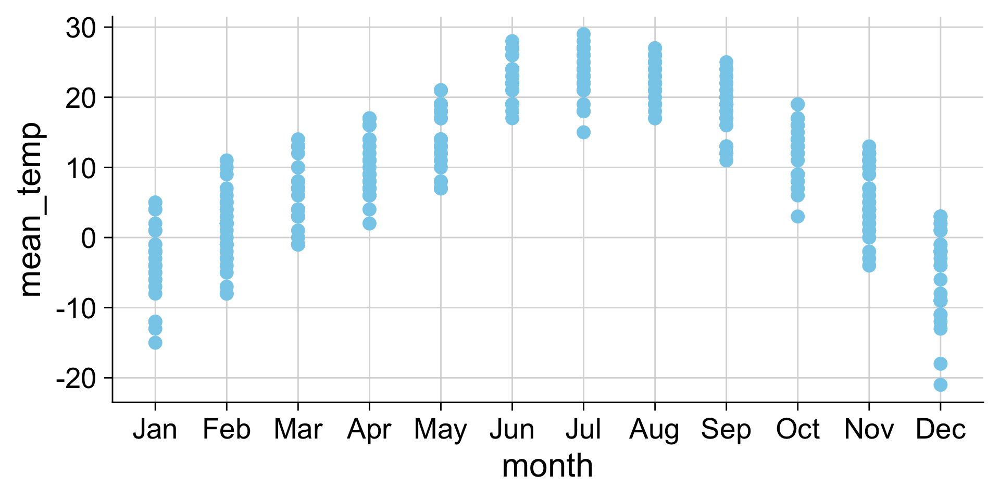Examples: Strip chart (w/ jitter)

Analyze subsets: group_by() and summarize()
Example application of grouping: Counting
Previously we used count, now we group the data
# A tibble: 44 × 6
# Groups: smoker [2]
pid arm smoker age education sex
<chr> <chr> <chr> <dbl> <chr> <chr>
1 pid_01 placebo non-smoker 26 grade 10-12, matriculated Female
2 pid_02 placebo smoker 33 grade 10-12, matriculated Female
3 pid_03 placebo smoker 30 post-secondary Female
4 pid_04 placebo non-smoker 34 grade 10-12, not matriculated Female
5 pid_05 treatment non-smoker 29 grade 10-12, matriculated Female
6 pid_06 placebo smoker 34 post-secondary Female
7 pid_07 placebo non-smoker 31 grade 10-12, not matriculated Female
8 pid_08 placebo smoker 30 grade 10-12, not matriculated Female
9 pid_09 treatment non-smoker 35 grade 10-12, not matriculated Female
10 pid_10 treatment non-smoker 32 less than grade 9 Female
# ℹ 34 more rowsExample application of grouping: Counting
Previously we used count, now we group the data, and then summarise
Example application of grouping: Counting
Now let’s group by multiple variables
# A tibble: 44 × 6
# Groups: smoker, arm [4]
pid arm smoker age education sex
<chr> <chr> <chr> <dbl> <chr> <chr>
1 pid_01 placebo non-smoker 26 grade 10-12, matriculated Female
2 pid_02 placebo smoker 33 grade 10-12, matriculated Female
3 pid_03 placebo smoker 30 post-secondary Female
4 pid_04 placebo non-smoker 34 grade 10-12, not matriculated Female
5 pid_05 treatment non-smoker 29 grade 10-12, matriculated Female
6 pid_06 placebo smoker 34 post-secondary Female
7 pid_07 placebo non-smoker 31 grade 10-12, not matriculated Female
8 pid_08 placebo smoker 30 grade 10-12, not matriculated Female
9 pid_09 treatment non-smoker 35 grade 10-12, not matriculated Female
10 pid_10 treatment non-smoker 32 less than grade 9 Female
# ℹ 34 more rowsExample application of grouping: Counting
Now let’s group by multiple variables, and summarise
Example application of grouping: Counting
count(...) is a short-cut for group_by(...) %>% summarize(n = n()) group_by() and summarise()is the general method
```{r}
table_01 %>%
count(smoker, arm)
table_01 %>%
group_by(smoker, arm) %>%
summarise(median_age = median(age))
```# A tibble: 4 × 3
smoker arm n
<chr> <chr> <int>
1 non-smoker placebo 12
2 non-smoker treatment 15
3 smoker placebo 11
4 smoker treatment 6
# A tibble: 4 × 3
# Groups: smoker [2]
smoker arm median_age
<chr> <chr> <dbl>
1 non-smoker placebo 31
2 non-smoker treatment 30
3 smoker placebo 33
4 smoker treatment 33.5You can make multiple summarise at once
Reshape: pivot_wider() and pivot_longer()

Reshaping example: Making a wide summary table
Reshaping example: Making a wide summary table
```{r}
education_wide <- table_01 %>%
count(education, arm) %>%
pivot_wider(names_from = arm, values_from = n)
education_wide %>%
pivot_longer(-education, names_to = "arm", values_to = "n")
```# A tibble: 8 × 3
education arm n
<chr> <chr> <int>
1 grade 10-12, matriculated placebo 7
2 grade 10-12, matriculated treatment 9
3 grade 10-12, not matriculated placebo 11
4 grade 10-12, not matriculated treatment 7
5 less than grade 9 placebo 2
6 less than grade 9 treatment 4
7 post-secondary placebo 3
8 post-secondary treatment 1combining datasets: joins
We use joins to add columns from one table into another

There are different types of joins
The differences are all about how to handle when the two tables have different key values
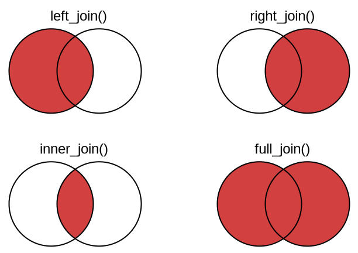left_join() - the resulting table always has the same key_values as the “left” table
right_join() - the resulting table always has the same key_values as the “right” table
inner_join() - the resulting table always only keeps the key_values that are in both tables
full_join() - the resulting table always has all key_values found in both tables
Left Join
left_join() - the resulting table always has the same key_values as the “left” table

inner_join
inner_join() - the resulting table always only keeps the key_values that are in both tables

Note, merging tables vertically is bind_rows(), not a join

Exercise
That’s enough slides for now time to try for yourself! Go to the module and go to the second exercise.